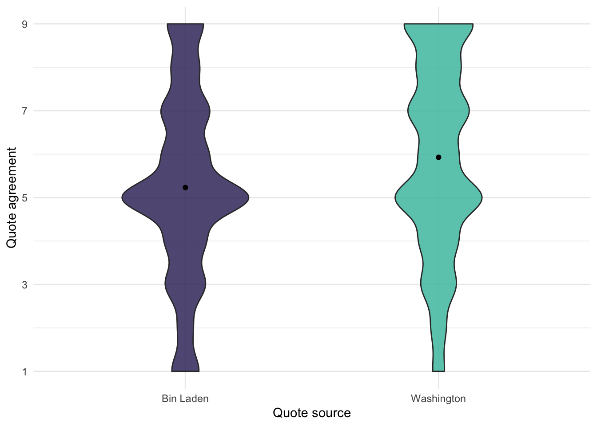
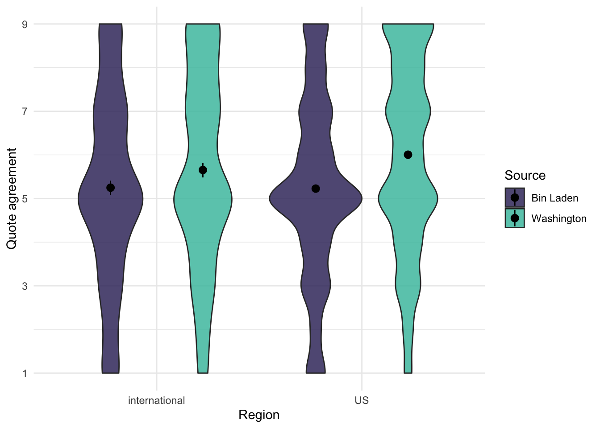

I illustrate how to use my tidystats software to analyze and report the results of a replication study that was part of the Many Labs 1 project.
Published
April 25, 2021
Analyzing the data
Lorge and Curtiss (1936) examined how a quotation is perceived when it is attributed to a liked or disliked individual. In one condition the quotation was attributed to Thomas Jefferson and in the other it was attributed to Vladimir Lenin. They found that people agree more with the quotation when the quotation was attributed to Jefferson than Lenin. In the Many Labs replication study (Klein et al., 2014), the quotation was attributed to either George Washington, the liked individual, or Osama Bin Laden, the disliked individual. The also used a different quotation, which was:
I have sworn to only live free, even if I find bitter the taste of death.
We are again interested in testing whether the source of the quotation affects how it is evaluated. The evaluation was assessed on a 9-point Likert scale ranging from 1 (strongly agree) to 9 (strongly disagree). I reverse coded this in the data that we’ll use. You can follow along by copy-pasting the code from this example.
Before getting into how tidystats should be used, let’s first simply analyze the data. I have designed tidystats to be minimally invasive. In other words, to use tidystats, you do not need to substantially change your data analysis workflow.
We’ll start with a basic setup where we load some packages and the data.
Code
# Load necessary packageslibrary(tidyverse)library(tidystats)library(viridis)library(knitr)# Load example datadata <-data(quote_source)# Set the default ggplot themetheme_set(theme_minimal())# Set optionsoptions(knitr.kable.NA ="-",digits =2)
Our main effect of interest is the difference in responses to the quote between the two conditions. Here I visualize this different with a violin plot.
Code
ggplot(quote_source, aes(x = source, y = response, fill = source)) +geom_violin(width = .5, alpha = .85) +stat_summary(fun ="mean", geom ="point") +labs(x ="Quote source", y ="Quote agreement") +scale_y_continuous(breaks =c(1, 3, 5, 7, 9)) +scale_fill_viridis(option ="mako", discrete =TRUE, begin = .25, end = .75) +guides(fill ="none")

Figure 1: Difference in responses between the two conditions
This looks like the effect is in the expected direction. Participants agreed more with the quotation when they believed the quote to be from George Washington compared to Osama Bin Laden.
Regarding descriptives, tidystats comes with its own functions to calculate descriptives. One of them is the describe_data function, inspired by the describe function from the psych package. You can use it together with group_by from the dplyr package to calculate a set of descriptives for multiple groups.
To test whether the difference in agreement between the two sources is statistically significant, we perform a t-test. Normally, we would just run the t-test like so:
Code
t.test(response ~ source, data = quote_source)
However, since we want to use tidystats to later save the statistics from this test, we will store the output of the t-test in a variable. This, and the final section of R code, will be the only thing you need to change in order to incorporate tidystats in your workflow.
Once you’ve stored the result of the t-test in a variable, you can look at the output by sending it the console, which will print the output.
Code
main_test <-t.test(response ~ source, data = quote_source)main_test
Welch Two Sample t-test
data: response by source
t = -13, df = 6323, p-value <2e-16
alternative hypothesis: true difference in means between group Bin Laden and group Washington is not equal to 0
95 percent confidence interval:
-0.80 -0.59
sample estimates:
mean in group Bin Laden mean in group Washington
5.2 5.9
This shows us that there is a statistically significant effect of the quote source, consistent with the hypothesis.
Next, let’s run some additional analyses. One thing we can test is whether the effect is stronger in the US compared to non-US countries. To test this, we perform a regression analysis. Here we also store the result in a variable, but this is actually quite common in regression analyses because you want to apply the summary function to this variable in order to obtain the inferential statistics.
Code
us_moderation_test <-lm(response ~ source * us_or_international, data = quote_source)summary(us_moderation_test)
Call:
lm(formula = response ~ source * us_or_international, data = quote_source)
Residuals:
Min 1Q Median 3Q Max
-5.005 -1.228 -0.228 1.772 3.772
Coefficients:
Estimate Std. Error t value Pr(>|t|)
(Intercept) 5.2488 0.0849 61.83 < 2e-16 ***
sourceWashington 0.4052 0.1172 3.46 0.00055 ***
us_or_internationalUS -0.0210 0.0955 -0.22 0.82589
sourceWashington:us_or_internationalUS 0.3717 0.1323 2.81 0.00497 **
---
Signif. codes: 0 '***' 0.001 '**' 0.01 '*' 0.05 '.' 0.1 ' ' 1
Residual standard error: 2.2 on 6321 degrees of freedom
(18 observations deleted due to missingness)
Multiple R-squared: 0.0275, Adjusted R-squared: 0.027
F-statistic: 59.5 on 3 and 6321 DF, p-value: <2e-16
There appears to be a significant interaction. Let’s inspect the interaction with a graph:
Code
ggplot(quote_source, aes(x = us_or_international, y = response, fill = source)) +geom_violin(alpha = .85) +stat_summary(fun.data ="mean_cl_boot", position =position_dodge(.9)) +labs(x ="Region", y ="Quote agreement", fill ="Source") +scale_y_continuous(breaks =c(1, 3, 5, 7, 9)) +scale_fill_viridis(option ="mako", discrete =TRUE, begin = .25, end = .75)

Figure 2: Source by region interaction
We see that the effect of the source appears to be larger in the US. Given that the positive source was George Washington, this makes sense.
Let’s do one more analysis to see whether the effect is stronger in a lab setting compared to an online setting.
Code
lab_moderation_test <-lm(response ~ source * lab_or_online, data = quote_source)summary(lab_moderation_test)
Call:
lm(formula = response ~ source * lab_or_online, data = quote_source)
Residuals:
Min 1Q Median 3Q Max
-4.967 -1.197 -0.197 1.737 3.803
Coefficients:
Estimate Std. Error t value Pr(>|t|)
(Intercept) 5.1971 0.0567 91.59 <2e-16 ***
sourceWashington 0.6864 0.0791 8.68 <2e-16 ***
lab_or_onlineonline 0.0664 0.0780 0.85 0.39
sourceWashington:lab_or_onlineonline 0.0172 0.1089 0.16 0.87
---
Signif. codes: 0 '***' 0.001 '**' 0.01 '*' 0.05 '.' 0.1 ' ' 1
Residual standard error: 2.2 on 6321 degrees of freedom
(18 observations deleted due to missingness)
Multiple R-squared: 0.0255, Adjusted R-squared: 0.025
F-statistic: 55.1 on 3 and 6321 DF, p-value: <2e-16
We see no significant interaction in this case. This means we do not find evidence that running the study in an online setting significantly weakens the effect; good to know!
Applying tidystats
Now let’s get to tidystats. We have three analyses we want to save: a t-test and two regression analyses. We stored each of these analyses in separate variables, called main_test, us_moderation_test, and lab_moderation_test.
The main idea is that we will add these three three variables to a list and then save the list as a file on our computer. You create an empty list using the list function. Once you have an empty list, you can add statistics to this list using the add_stats function. add_stats accepts a list as its first argument, followed by a variable containing a statistics model. In our case, this means we need to use the add_stats function three times, as we have three different analyses we want to save. Since this can get pretty repetitive, we will use the piping operator to pipe the three steps together and save some typing.
Before we do so, however, note that we can take this opportunity to add some meta-information to each test. For the sake of this example, let’s say that the t-test was our primary test. We also had a suspicion that the location (US vs. international) would matter, but it wasn’t our main interest. Nevertheless, we preregistered these two analyses. During data analysis, we figured that it might also matter whether the study was conducted in the lab or online, so we tested it. This means that this is an exploratory analysis. With add_stats, we can add this information when we add the test to our empty list.
In the end, the code looks like this:
Code
results <-list()results <- results %>%add_stats(main_test, type ="primary", preregistered =TRUE) %>%add_stats(us_moderation_test, type ="secondary", preregistered =TRUE) %>%add_stats(lab_moderation_test, type ="secondary", preregistered =FALSE)
I recommend to do this at the end of the data analysis script in a section called ‘tidystats’. This confines most of the tidystats code to a single section, keeping it organized, and it will keep most of your script readable to those unfamiliar with tidystats.
After all the analyses are added to the list, the list can be saved as a .json file to your computer’s disk. This is done with the write_stats function. The function requires the list as its first argument, followed by a file path. I’m a big fan of using RStudio Project files so that you can define relative file paths. In this case, I create the .json file in the ‘Data’ folder of my project folder.
Code
write_stats(results, "tidystats-example.json")
If you want to see what this file looks like, you can inspect it here. Open the file in a text editor to see how the statistics are structured. As you will see, it is not easy for our human eyes to quickly see the results, but it’s easy for computers.
Once you’ve saved the file, you can share the file with others or use it to report report the results in your manuscript using the Word add-in.
That marks the end of this tidystats example. If you have any questions, please check out the tidystats website or contact me via Twitter.
This post was last updated on 2022-04-29.
References
Klein, R. A., Ratliff, K. A., Vianello, M., Adams, R. B., Bahník, Š., Bernstein, M. J., Bocian, K., Brandt, M. J., Brooks, B., Brumbaugh, C. C., & al., et. (2014). Investigating variation in replicability: A “many labs” replication project. Social Psychology, 45(3), 142–152. https://doi.org/10.1027/1864-9335/a000178